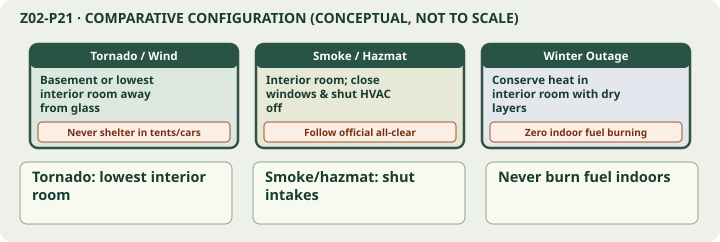

Z02-P21 · Shelter and housing · New manuscript
Match shelter-in-place rooms to wind, tornado or outdoor air hazards
Select the right interior room and preparation actions inside a building for distinct household emergencies.
When it applies · Homes, cabins and sturdy buildings during tornado warnings, high winds, winter storms or outdoor hazardous-material/smoke alerts.
Equipment · Battery radio or alert phone, flashlights, sturdy shoes, drinking water and emergency kit.

Actions
- For tornadoes and extreme straight-line winds, move immediately to a basement, storm cellar or lowest-floor small interior room away from windows and exterior walls.[E17, E24]
- For outdoor chemical releases or heavy wildfire smoke, follow official orders to close windows, shut off HVAC/ventilation intakes and move to an interior room until officials issue an all-clear.[E24, C19]
- Never run portable generators, charcoal grills or unvented camp stoves inside a shelter-in-place room, basement or attached garage; keep CO alarms working and exits reachable.[C05, C06, C09, C16]
Failure recognition · Sheltering near large windows during a tornado warning, or running an indoor camp stove inside a sealed smoke-protection room.[E17, E24, C16]
Verify · Household members can name the exact room for wind/tornado versus air-quality alerts and confirm working exits and CO alarms.[E24, C09, ED]
Stop or change course · If structural damage, fire, rising floodwater or suspected carbon monoxide threatens the shelter room, evacuate immediately to safer ground per official guidance.[E24, C07, T07]
Evidence and editorial notes
- C05 · CPSC · Portable Heaters and Camping Equipment (current web edition)
- Section: Carbon monoxide poisoning from portable camping equipment · Conditions: Tents, campers, vehicles and other enclosed spaces
Support: Fuel-burning camping equipment can lead to fatal carbon monoxide buildup in enclosed spaces.
Limitations: High altitude increases incomplete combustion and CO production. · Conflicting evidence: None; aligns with CDC-CO and NPS guidance.
Editorial note: Hard-stop prohibition against indoor/vestibule/tent combustion. · Specialist reviewer: Carbon monoxide safety and emergency medicine
Primary source · checked 2026-11-24 - C06 · CPSC · CPSC Warns of Generator, Carbon Monoxide and Fire Hazards Ahead of Hurricane Season (2026 seasonal agency guidance)
- Section: Prevent CO poisoning > Portable generators · Conditions: Portable fuel-driven generator during an outage
Support: Use outdoors at least 20 feet from the home with exhaust directed away from buildings.
Limitations: Wind eddies, overhanging eaves, and open windows can still draw exhaust toward occupied structures. · Conflicting evidence: None; 20 ft is a minimum floor, not a guarantee in enclosed alleys.
Editorial note: Anchored numeric separation rule for portable generators only. · Specialist reviewer: Electrical and carbon monoxide safety
Primary source · checked 2026-11-24 - C07 · CPSC · Carbon Monoxide Fact Sheet (current web edition)
- Section: CO poisoning symptoms; what to do if suspected · Conditions: Suspected carbon monoxide exposure
Support: Escape to fresh air immediately and contact emergency services. Symptoms can include headache, dizziness, nausea and confusion.
Limitations: CO is colorless and odorless; symptoms mimic viral illness or altitude fatigue and can incapacitate sleepers without waking. · Conflicting evidence: None; aligns with CDC-CO.
Editorial note: Standard CO emergency stop condition across Z02 and Z03. · Specialist reviewer: Carbon monoxide safety and emergency medicine
Primary source · checked 2026-11-24 - C09 · CPSC · CO Alarms (current web edition)
- Section: Installing and maintaining CO alarms · Conditions: U.S. household CO prevention
Support: Install CO alarms on every level and outside sleeping areas. Follow placement and maintenance instructions.
Limitations: Alarms alert to buildup after release begins; they never make indoor fuel-burning appliances safe. · Conflicting evidence: None; complements C05 and C06.
Editorial note: Paired with exit-plan checks in household and shelter cards. · Specialist reviewer: Carbon monoxide safety
Primary source · checked 2026-11-24 - C16 · CDC · Carbon Monoxide Poisoning Basics (current web edition)
- Section: Carbon Monoxide Poisoning Basics > Sources and Prevention · Conditions: Any enclosed or semi-enclosed structure, garage, porch, tent, or vehicle
Support: Never burn charcoal, operate camp stoves, or run fuel-burning heaters inside homes, garages, tents, or vehicles even with doors or windows partly open.
Limitations: Vent cracks and open garage doors do not prevent lethal CO accumulation. · Conflicting evidence: Refutes dangerous myth that cracking a tent vent or garage door makes indoor combustion safe.
Editorial note: Hard-stop rule across all Z02 ventilation and Z03 combustion cards. · Specialist reviewer: Carbon monoxide safety and emergency medicine
Primary source · checked 2026-11-24 - C19 · FEMA / Ready.gov · Wildfires (current web edition)
- Section: Wildfires > Stay Safe and Smoke Protection · Conditions: Approaching wildfire or heavy smoke in camp or community
Support: Evacuate early along open routes per official orders, protect airways from heavy smoke, and avoid turning back into active fire corridors.
Limitations: Cloth face coverings do not filter fine wildfire smoke particles; fitted particulate respirators or clean indoor air are distinct interventions. · Conflicting evidence: None; coordinates with NWS-WILDFIRE.
Editorial note: Covers wildfire escape and smoke decision thresholds in Z01/Z03. · Specialist reviewer: Emergency management and fire safety
Primary source · checked 2026-11-24 - E17 · NWS · Tornado Safety (current web edition)
- Section: Tornado Safety > Staying Safe During a Tornado · Conditions: Tornado warning in camp, vehicle, or building
Support: Move to an interior lower-level room of a sturdy building if reachable; tents, mobile structures, and highway overpasses are unsafe; if caught outdoors with no sturdy shelter, monitor alerts early and follow NWS last-resort guidance.
Limitations: No outdoor improvised shelter is tornado-safe. · Conflicting evidence: None; reinforces early forecast withdrawal before severe storms arrive.
Editorial note: Establishes severe-storm abandonment threshold for camp shelters. · Specialist reviewer: Emergency management and meteorology
Primary source · checked 2026-11-24 - E24 · FEMA / Ready.gov · Shelter (current web edition)
- Section: Shelter > Sheltering in Place and Emergency Shelter · Conditions: Hazardous weather, outdoor smoke, or chemical/utility emergencies
Support: Choose shelter type to match the specific hazard: lowest interior room for wind/tornado, sealed interior room for outdoor hazardous-material alerts, or high ground for flood.
Limitations: Sealing a room for short-term chemical alerts requires following official duration orders to avoid CO/air-quality hazards. · Conflicting evidence: None; links household and outdoor shelter decision logic.
Editorial note: Bridges Z02 shelter selection with emergency-management hazard classes. · Specialist reviewer: Emergency management and shelter safety
Primary source · checked 2026-11-24 - T07 · FEMA · Flood Hazard Information Sheet (agency PDF)
- Section: How to stay safe when a flood threatens; take an active role · Conditions: U.S. household flood preparedness and evacuation
Support: Prepare contacts, medication and supplies. Heed evacuation instructions and avoid flooded roads.
Limitations: Six inches of moving water can knock down an adult; shallow-looking crossings hide road washouts. · Conflicting evidence: None; aligns with NWS-FLOOD.
Editorial note: Supports flood turnaround and evacuation decision thresholds. · Specialist reviewer: Emergency management
Primary source · checked 2026-11-24
Source lineage · Ready.gov shelter and NWS tornado safety; new manuscript · Classification · New manuscript.